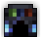
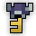

| Last updated: Exalt Version 5.12.0.0 (June 2025) |
|---|
|  |
| Dust Drops | ||
|---|---|---|
| 37-43 |
0 |
0 |
The Cursed Library is a medium-high level dungeon that is a source of Potions of Wisdom, Vitality, and Attack. It is also the main source of four untiered items: the Necronomicon, Scholar’s Seal, Ronin’s Wakizashi, Corruption Cutter and Wand of Hidden Knowledge, along with the entire Phantom Archer ST Set, and it is also another location where the Tarot Card Pack can be found to get a chance to obtain any of the Tarot Card Artifacts.
Portal to Cursed Library has a chance to drop from Revenant, Creepy Beholder, Harrowed Fiend and Beholder. It is also guaranteed to drop from Shady Sect Leader within the Realm.
This dungeon must be completed to earn ‘Travel of the Decade‘, ‘King of the Mountains‘, ‘Hero of the Nexus’ and ‘Realm of the Mad God’ fame bonuses.
| The Realm Eye says: |
|---|

This place was once the realm’s hub of knowledge. History’s finest researchers, educators, and philosophers gathered here in its prime. Oryx saw this shared wisdom as a threat to his dominance, so he conspired with Lord Ruthven to launch a surprise attack. The vicious curse you just fought back was the handiwork of the vampire lord, designed to eradicate this library and horrifically mutate those inside. |
 The Cursed Library Key is available in the Nexus for 100  .
.
See the Cursed Library Guide for a complete walk-through on the dungeon and all its enemies.

The Cursed Library is part of the Standard Quest pool from the Tinkerer and has four associated quests, including a scout quest.
| Name | Description | Items Needed | Reward |
|---|---|---|---|
| Scout the Library | Scout the Cursed Library and report back here! |  |
  |
| The Archivist | Defeat Avalon in the Cursed Library! | |

|
| Blessings and Curses | Life is all about balance, wouldn’t you agree? | |
|
| The Cost of Wisdom | I was never the most book smart, but there’s still time for you! |  |
Many players with maxed characters will choose to rush the dungeon in an attempt to reach the boss quickly. Do not get overconfident when rushing, as accidentally running on top of a Headless Specter or a Bookwyrm when they use their omni-directional shotgun attacks will likely be instant death even for maxed melee characters. When rushing, it might be beneficial to not shoot as once enemies reach a certain hp, they fire an even more dangerous shotgun.
The first release of the dungeon announced to public testing can be found here.
The Cursed Library was introduced in Patch X.31.7.0. Its production was led by Toastrz (a former member of the User-Generated Content group and a former official DECA developer), with Beige, Piggby, Trensient and Aurum contributing the art, and with special thanks to Dappertron, Mrunibro, Kiddforce, and Tuvior.
Because of this dungeon, every realm god now drops a dungeon as the Beholder was the last god to not drop a dungeon.
Before Exalt Version 5.11.0.0 (May 2025), dungeon completion gave 20-47  with 60% chance.
with 60% chance.
Before Exalt Version 5.12.0.0 (June 2025), dungeon completion gave 34-40  .
.


{kind=link}